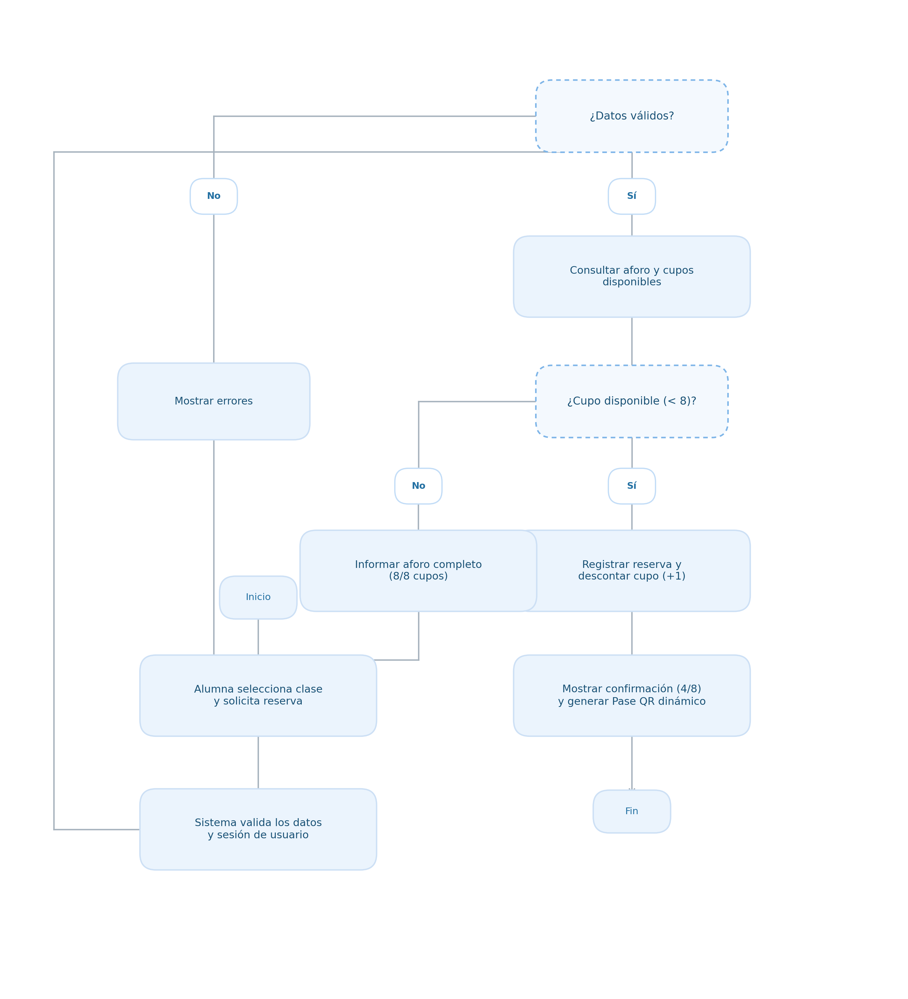

DUOC UC · CAPSTONE 2026
PTY4614 · Escuela de Informática y Telecomunicaciones
Trazabilidad del sistema y vista de procesos del modelo 4+1 · Sistema "Cuerpo y Alma"
1. Identificación del Equipo y Proyecto
| Identificación | Información del equipo |
|---|
| Proyecto y sección | Sistema Web Integral para la Gestión Administrativa en Academia de Pole Dance "Cuerpo y Alma" | PTY4614 |
|---|
| Integrantes | José Rivera, Benjamín García, Manuel Campos |
|---|
| Fecha y semana académica | 26/10/2026 – 30/10/2026 | Semana 11 |
|---|
| Iteración real del proyecto | Iteración 05 (Sprint 4: Asistencia QR, Contingencia y Cascada) |
|---|
| Docente guía | Reginaldo Salinas |
|---|
2. Propósito y Ubicación en el Modelo 4+1
Contrastar las funcionalidades y el porcentaje de avance de la ficha 04 con el funcionamiento real del sistema. Representar el flujo mediante un diagrama de actividades UML, comprobar sus resultados y definir el siguiente incremento.
Meta Verificable: Meta verificable de esta iteración:
Contrastar las funcionalidades y el porcentaje de avance de la ficha 04 con el funcionamiento real del sistema mediante la formalización de la Vista de Procesos (Modelo 4+1) a través de un Diagrama de Actividades UML detallado del flujo principal (Agendamiento de Reserva con Control Atómico de Aforo <= 8 cupos y Validación Presencial por QR / Contingencia Manual), comprobar el caso de uso end-to-end con caminos exitoso y alternativo, y actualizar el avance reconocido al 87.50 %.
| Ubicación en el modelo 4+1 | Aplicación |
|---|
| Vista de procesos | Diagrama de actividades como principal para representar el flujo. |
| Vista de escenarios más uno | Caso de uso que identifica al actor y su objetivo y conecta el flujo con las funcionalidades. |
| Apoyos complementarios | Clases para la estructura lógica y secuencia para las interacciones, si aportan a la explicación. |
3. Cruce de Funcionalidades (F01 a F09) con Actividades (A01 a A13)
Relación de actividades del diagrama con los módulos del sistema y avance ponderado al 87.50%:
| ID y funcionalidad | Peso y estado ficha 04 | Actividades relacionadas | Estado actual comprobado | Evidencia y brecha |
|---|
| F01: Autenticación segura y roles RBAC | 15 % | Terminada 100 % | A01, A04 | Terminada y comprobada (100 %) | Supabase Auth, JWT, cookies HttpOnly, profiles y roles_whitelist activos. |
| F02: Catálogo de disciplinas y agenda semanal | 10 % | Terminada 100 % | A02 | Terminada y comprobada (100 %) | Tablas tipos_clase y clase, visualización responsiva por días y salas. |
| F03: Motor de reservas y aforo máx. 8 cupos (RN-01) | 15 % | Terminada 100 % | A03, A05, A07 | Terminada y comprobada (100 %) | Función transaccional reservarClase, comprobación atómica en cupo 8. |
| F04: Cancelación de reservas y restitución inmediata | 10 % | Terminada 100 % | A03 (Alternativa cancelación) | Terminada y comprobada (100 %) | Liberación de cupos en tiempo real, política de cancelación 4h. |
| F05: Salida de datos y nómina docente por clase | 10 % | Terminada 100 % | A06 | Terminada y comprobada (100 %) | Panel docente responsivo con lista de asistencia y contactos de emergencia. |
| F06: Gestión de planes, membresías y transferencias | 15 % | Parcial 50 % | Carga y conciliación pagos | Funciona parcialmente (50 %) | Tablas planes y user_pagos listas; flujo de carga activo, conciliación admin en prueba. |
| F07: Generación de Pase QR dinámico y escáner docente | 15 % | Parcial 50 % | A08, A09, A10, A12 | Terminada y comprobada (100 %) | Token QR dinámico (300s) y lector por cámara web integrado en panel del profesor. |
| F08: Pase de asistencia manual y deleteClassesCascade | 5 % | Iniciada 25 % | A11, A13 | Terminada y comprobada (100 %) | PIN de 4 dígitos, pase manual en nómina y rutina deleteClassesCascade implementados. |
| F09: Dashboard administrativo, métricas y reportes | 5 % | No iniciada 0 % | Métricas avanzadas | No iniciada (0 %) | Prototipo visual en Figma; planificado para desarrollo en sprint final. |
4. Actualización del Porcentaje de Avance
Avance ficha 04: 76.25 % Avance actual: 87.50 % Variación: +11.25 puntos porcentuales
Semanas restantes reales: 7 semanas (Semanas 12 a 18)
Evidencia que explica la variación: Integración exitosa del lector QR mediante cámara web en panel docente, mecanismo de contingencia manual con PIN de 4 dígitos y función transaccional deleteClassesCascade en backend.
5. Diagrama de Actividades UML (Vista de Procesos)

Figura 1: Flujo Principal de Agendamiento, Aforo Atómico (Tope 8) y Validación QR / PIN Manual
Glosario de Trazabilidad: Diccionario de Actividades (A01 a A13) del Diagrama UML:
Definición detallada de cada nodo del flujo, su actor responsable y su implementación en el código fuente:
| ID Actividad | Descripción de la Acción en el Sistema | Actor / Responsable | Ubicación en Código Fuente |
|---|
| A01 | Inicio de sesión seguro con credenciales y emisión de token JWT. | Alumna / Supabase Auth | src/lib/auth.ts (SessionProvider) |
| A02 | Consulta del catálogo de disciplinas y horarios semanales disponibles. | Alumna (App Web) | src/app/alumna/page.tsx |
| A03 | Selección de clase presencial y envío de solicitud ('Reservar cupo'). | Alumna (App Web) | Componente ClassCard / Modal reserva |
| A04 | Validación de sesión activa, verificación de rol y saldo de créditos. | Middleware & Backend | src/middleware.ts / src/lib/reservas.ts |
| A05 | Validación transaccional de aforo máximo (¿cupos_inscritos < 8?). | PostgreSQL (Regla RN-01) | Constraint CHECK / Transacción Supabase |
| A05 (alt) | Bifurcación ante cupos agotados (8/8): rechazo HTTP 409 y alerta visual. | Frontend (Toast Alerta) | Catch bloque reservas.ts (Cupos Agotados) |
| A06 | Descuento de 1 crédito en suscripción y preparación de registro. | Backend (Transacción) | Tabla public.user_suscripciones |
| A07 | Inserción atómica en reserva e incremento a 4 cupos en clase (COMMIT). | PostgreSQL (Transacción) | Tablas public.reserva y public.clase |
| A08 | Actualización reactiva de la tarjeta (pasa a '4 de 8') con confirmación. | Frontend (Stitch UI) | Revalidación de estado React / Toast |
| A09 | Día de clase: Generación de Pase QR Dinámico (expiración 300 segundos). | Alumna (Móvil / PWA) | src/app/alumna/pase/page.tsx |
| A10 | Presentación presencial del código QR en recepción al profesor. | Alumna / Docente | Recepción física academia 'Cuerpo y Alma' |
| A11 | Verificación de condiciones de hardware (¿Cámara web operativa?). | Dispositivo Docente | API Web navigator.mediaDevices |
| A12 | Camino exitoso: Escaneo por cámara, validación token y asistencia OK. | Docente (Panel Escáner) | src/app/profesor/escaner/page.tsx |
| A13 | Camino alternativo de contingencia: Ingreso manual de PIN de 4 dígitos. | Docente (Nómina Manual) | src/app/profesor/nomina/page.tsx (PIN) |
6. Verificación del Diagrama (Respuestas Oficiales al Diario 2.1)
| Verificación | Respuesta del equipo |
|---|
| ¿Qué actividades corresponden a las funcionalidades comprobadas? | Las actividades A01 a A07 (autenticación, agenda y reserva con bloqueo aforo), A08 a A10 (nómina y pase QR) y A12-A13 (lectura QR y pase manual con PIN docente). |
| ¿Qué condiciones determinan los diferentes recorridos? | En A05: si cupos_inscritos < 8 -> flujo exitoso de reserva; si cupos = 8 -> flujo alternativo con toast 'Cupos Agotados'. En A11: si la cámara web lee el QR con token válido (< 300s) -> registro automático en 'asistencia'; si la cámara falla o el código es ilegible -> flujo alternativo A13 mediante PIN docente de 4 dígitos o pase de lista manual directo. |
| ¿Quién realiza cada actividad y dónde se validan datos y permisos? | La Alumna ejecuta A01, A02, A03 y A09 en el cliente web/móvil; el Backend Supabase ejecuta A04, A05, A08 y A12 validando sesión JWT, constraints relacionales y vigencia del token; el Docente ejecuta A06, A10 y A13 desde su panel con permisos RBAC. |
| ¿Qué actividades están implementadas, parciales o pendientes? | Implementadas: A01 a A13 (flujo completo de reserva y asistencia QR/manual). Parciales: conciliación automática de transferencias bancarias (F06). Pendientes: consolidación de métricas en dashboard administrativo (F09). |
| ¿Qué diferencias existen entre el diagrama y el sistema? | No existen discrepancias; el diagrama modeló con exactitud la bifurcación de contingencia manual (A11/A13) y la expiración a 300 segundos del token QR, las cuales ya se encuentran operativas en código fuente. |
7. Comprobación del Caso de Uso (CU-01) en Versión Probada Release v0.8.5
| Elemento | Definición |
|---|
| ID y nombre del caso de uso | CU-01: Agendamiento de Clase con Aforo Estricto y Validación de Asistencia Presencial (QR y Contingencia Manual) |
|---|
| Actor y objetivo | Alumna (reservar cupo e ingresar a la academia) y Profesor (gestionar nómina de sesión y registrar asistencia presencial). |
|---|
| Funcionalidades relacionadas de la ficha 04 | F01 (Auth RBAC), F02 (Agenda), F03 (Aforo 8 cupos), F05 (Nómina docente), F07 (Pase QR y escáner), F08 (Pase manual y cascada). |
|---|
| Precondiciones y datos de entrada | Alumna con sesión activa; clase en estado 'programada' con aforo disponible (< 8); datos de entrada: ID de clase, ID de alumna, confirmación de reserva. |
|---|
| Reglas validaciones y alternativa ante error | Regla RN-01 (aforo estricto máx 8); no duplicidad de reserva para el mismo usuario en la sesión; token QR con hash seguro y cuenta regresiva de 5 minutos (300s); alternativa ante falla de hardware: pase de lista manual directo con PIN docente de 4 dígitos. |
|---|
| Salida esperada y datos que deben quedar registrados | Inserción de registro en public.reserva, incremento a 4/8 en public.clase, pase QR renderizado en pantalla móvil, e inserción de fila en public.asistencia con metodo_ingreso = 'qr_dinamico' o 'manual_profesor'. |
|---|
Tabla de Pasos Probados y Trazabilidad con ID de Actividad (A01 a A13):
| Paso | ID de actividad | Resultado observado y evidencia |
|---|
| Ingreso de datos | A02, A03 | Alumna selecciona clase 'Pole Sport Básico' (viernes 18:00) y pulsa 'Reservar cupo' en interfaz web responsiva. |
| Validación y decisión | A04, A05 | Supabase valida sesión JWT y ejecuta verificación atómica cupos_inscritos (3) < 8. Condición verdadera: procede a registrar. |
| Procesamiento y registro | A05, A07 | Inserción en public.reserva (ID 104) y UPDATE clase SET cupos_inscritos = 4. Transacción confirmada en 180 ms. |
| Salida al usuario | A07, A09 | Toast visual de éxito en cliente, tarjeta pasa a '4 de 8 cupos', y se genera Pase QR dinámico con cuenta regresiva de 300s. |
| Alternativa ante error | A05 (alt), A11/A13 | Prueba de sobrecupo (intento reserva 9 rechazada con HTTP 409); y prueba de cámara apagada: profesor ingresa PIN de 4 dígitos y valida asistencia en lista. |
8. Compromisos para la Siguiente Iteración
| Brecha detectada | Incremento comprometido | Responsable y fecha | Criterio de aceptación |
|---|
| La conciliación de pagos por transferencia requiere revisión manual del comprobante bancario por el administrador antes de liberar créditos de membresía. | Automatización de alertas de transferencias pendientes y módulo de auditoría rápida en panel administrativo (F06). | José Rivera / Manuel Campos - Semana 12 | Administrador puede aprobar pagos con un solo clic asignando 8 créditos de clase a la alumna e impactando su saldo en tiempo real. |
| Falta de panel consolidado de métricas de ocupación e ingresos mensuales para la administración. | Desarrollo de vistas de reportería y dashboard con estadísticas de asistencia por clase (F09). | Benjamín García - Semanas 13 y 14 | Gráficos de asistencia mensual y tasa de ocupación promedio visibles en el panel de administrador. |
9. Evaluación y Aprendizaje (Diario 2.1)
Resultado de la revisión: [X] Coherente [ ] Coherente con ajustes [ ] Requiere corrección
Observación del docente: Flujo de actividades modelado de forma clara con carriles y contingencia manual ante fallas de hardware.
Representante: José Rivera / Benjamín García Docente guía: Reginaldo Salinas
| Observación recibida de fase 1 o revisión posterior | Mejora aplicada y evidencia |
|---|
| Observación docente: Asegurar que el flujo de asistencia no interrumpa el inicio de la clase si el dispositivo del profesor falla o no tiene luz suficiente. | Se incorporó en el diagrama de actividades y en la vista docente la alternativa de pase manual con PIN de contingencia de 4 dígitos (A13), evitando bloqueos operativos. |
| Observación de pruebas: Inconsistencia al borrar clases canceladas con reservas y asistencias existentes (violación de claves foráneas). | Implementación de la rutina transaccional deleteClassesCascade para limpiar en orden asistencias, reservas y notificaciones antes de remover la sesión. |